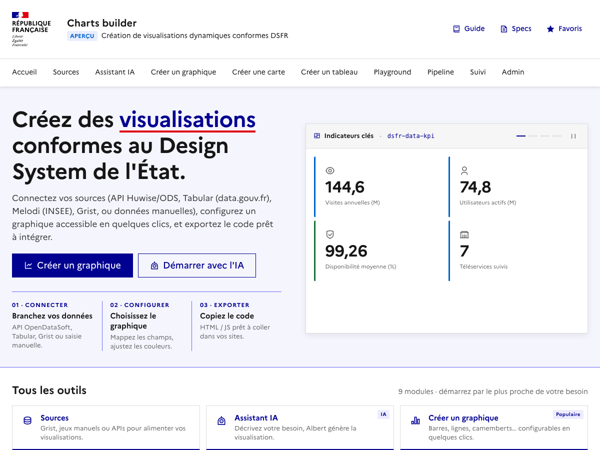

Guide utilisateur — dsfr-data
Ce guide presente les principaux parcours d'utilisation de dsfr-data, une bibliothèque de Web Components de dataviz pour les sites gouvernementaux francais, conforme au DSFR.
Chaque parcours est presente comme une user story :
Visites guidees
Lancez une visite guidée pour decouvrir chaque outil. Chaque visite ne se lance qu'une fois automatiquement ; vous pouvez la relancer ou la réinitialiser a tout moment.
Jeux de donnees de demonstration
Le Builder et le Builder IA proposent des jeux de donnees d'exemple prets a l'emploi pour decouvrir l'outil sans connecter de source. Vous pouvez les masquer si vous ne souhaitez utiliser que vos propres donnees.
L'interface
L'application est accessible depuis la page d'accueil qui regroupe tous les outils :

Les outils disponibles sont :
- Sources : connecter et gerer les sources de donnees (Grist, API, manuelles)
- Builder : générateur visuel de graphiques pas-a-pas
- Builder IA : générateur de graphiques par conversation avec l'IA Albert
- Playground : editeur de code interactif avec apercu temps reel
- Dashboard : editeur visuel de tableaux de bord multi-widgets
- Monitoring : suivi des deployements de widgets en production
Parcours utilisateur
7 parcours pas-a-pas : donnees locales, Grist, Builder IA, Playground, Dashboard, API REST, Monitoring.
Exemples par composant
Exemples live avec code source : dsfr-data-source, normalize, query, search, facets, display.
Ressources
Playground
Editeur de code interactif avec exemples precharges et apercu en temps reel.
Demo composants
Voir tous les composants avec leurs attributs et exemples interactifs.
DSFR Chart
Documentation officielle des composants graphiques DSFR.
Télémétrie opt-in (dsfr-data-beacon)
La bibliothèque n'envoie aucune télémétrie par défaut. Pour alimenter le
tableau de bord de monitoring d'une instance auto-hébergée, déposez un
<dsfr-data-beacon> dans la page : la présence d'une url
vaut opt-in, et un simple réglage global sert de coupe-circuit.
<!-- Opt-in : déclare la cible de collecte de CETTE page -->
<dsfr-data-beacon url="https://mon-instance.example.fr/api/beacon"></dsfr-data-beacon>
<!-- Coupe-circuit global : désactive toute télémétrie, même si un beacon est présent -->
<script>window.DSFR_DATA_BEACON = false;</script>